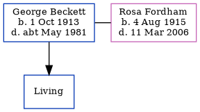

George Henry Beckett 1913 - c1981
[ Home ] | [ Calendar ] | [ Surnames Index ] | [ Family History ], George Beckett was born in Litchfield, Staffordshire, England on Oct 1, 1913<span class="citation">1,2,3,4,5</span> and. He married Rosa Fordham (with whom he had 1 surviving child) in Thanet, Kent, England on Apr 1, 1940<span class="citation">6</span>.</p><p>Throughout his life, he lived in Whittington, Staffordshire, England in 1915<span class="citation">2</span>; and at Boxwell, Lichfield, Staffordshire on Sep 29, 1939<span class="citation">1</span>. <p>He died <i>c.</i> May 1981 in Birmingham, Warwickshire, England<span class="citation">4</span> (cirrhosis Of Liver, Non Drinker).
Citations
- 1939 Register - Findmypast (was recorded at this address)
- British Army WWI Service Records, 1914-1920 Online publication - Provo, UT, USA: Ancestry.com Operations Inc, 2008.Original data - War Office: Soldiers" Documents, First World War "Burnt Documents" (Microfilm Copies); (The National Archives Microfilm Publication WO363); Records created or inherited (Relation to Head of House: Child)
- England & Wales births 1837-2006 - Findmypast
- England & Wales deaths 1837-2007 - Findmypast
- England & Wales, FreeBMD Birth Index, 1837-1915 Online publication - Provo, UT, USA: The Generations Network, Inc., 2006.Original data - General Register Office. England and Wales Civil Registration Indexes. London, England: General Register Office. © Crown copyright. Published by permission of the Cont
- England & Wales, Marriage Index: 1916-2005 Online publication - Provo, UT, USA: The Generations Network, Inc., 2009.Original data - General Register Office. England and Wales Civil Registration Indexes. London, England: General Register Office. © Crown copyright. Published by permission of the Cont
Media
England & Wales births 1837-2006 - BMD/B/1913/4/AZ/000102/081
England & Wales deaths 1837-2007 - BMD/D/1981/2/AZ/000072/046
1939 Register - TNA/R39/5467/5467B/003/20
England & Wales births 1837-2006 - BMD/B/1913/3/AZ/000095/147
England & Wales marriages 1837-2005 - BMD/M/1940/2/AZ/000109/037
Family Tree
Generated by Ged2Site. Last updated on Jul 20, 2025